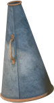
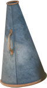
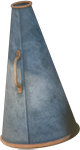
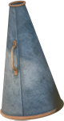

Niaz Diasamidze est le chanteur et leader de 33a, un groupe de folk rock géorgien fondé en 1994 à Tbilissi. 33a livre un métissage du folk français et géorgien avec des éléments pop et reggae, sur des textes principalement en géorgien parfois en français. Le nom du groupe fait référence au numéro de l’immeuble de la rue Paliachvili à Tbilissi où habite Niaz Diasamidze.
33a
Galaktioni
 


Minister of Justice

Metropolitan of Kutaisi
Prime minister
Auto mechanic
Historian and journalist
President